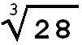
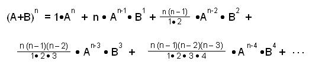
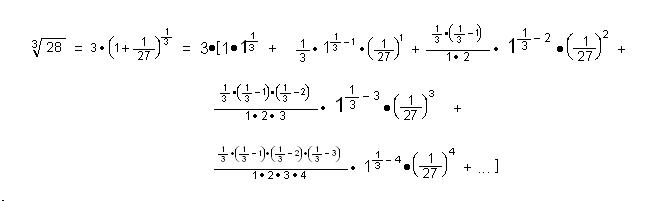

Find the (cube root of 28 = = (28)1/3 ) by using the Binomial Expansion/Chapter 10
From Chapter 9, the first 5 terms of the binomial expansion are:

Using some properties of exponents we'll rewrite in binomial form:
= (28)1/3 = (27+1)1/3 = (27(1 + 1/27))1/3 = 271/3 (1 + 1/27)1/3 = 3*(1 + 1/27)1/3 . Now we can use the first 5 terms of the binomial expansion above by putting 1-> A, 1/27 -> B, and 1/3 -> n and we'll multiply each term by 3. We get the following:

= 3 + 0.037037... - 0.000457247... + 0.000009408... - 0.000000116...+ ... , an infinite altenating-in sign, sequence (after the first 2 terms), whose limit is = 3.03658... correct to 5 places. When A=1 and B is small, the expansion converges quicker, because raising a small number to larger powers, makes the value very much smaller.